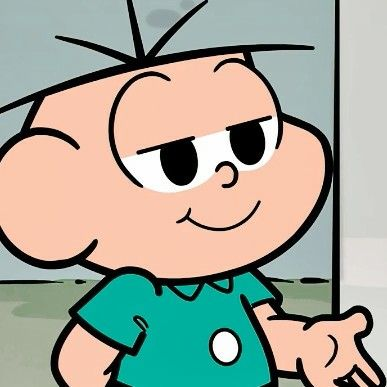

Cebolácio Menezes da Silva Júnior
123265441283
Rua do Limão, 13, Limoeiro, São Paulo, São Paulo
Ciência da Computação
2 Período
Usabilidade, Desenvolvimento Web, Mobile e Jogos
Teoria da Computação e Compiladores
Estruturas de Dados e Análise de Algoritmoss
Meu nome é Cebolácio Júnior Menezes da Silva, mas sou mais conhecido como Cebolinha ou Cebola, e sou um dos personagens mais célebres e engraçados de Mauricio de Sousa, e um dos protagonistas da série de quadrinhos nacional Turma da Mônica. Minhas características marcantes são, a dislalia (trocando a letra "R" pelo "L"), e ter apenas cinco fios de cabelo espetados na cabeça. Eu sou mestre em criar diversos planos infalíveis para derrotar a Mônica, outra personagem principal e minha conhecidíssima rival, para pegar o posto de dono da Rua do Limão e seu coelhinho, Sansão (para dar uns deliciosos nós nas orelhas do bichinho de pelúcia). Originalmente, eu era o personagem principal de Mauricio, até que perdi o título para a dentucinha, por isso quero derrotá-la constantemente. Além dos planos infaliveis (que por algum motivo nunca dão certo) adoro jogar futebol com meus amigos.
Sempre fui apaixonado por tecnologia e resolver enigmas complexos, o que me levou a escolher Ciência da Computação como minha área de estudo. Agora, entrando no terceiro período, estou mais empolgado do que nunca, pois acabei de começar um estágio incrível na TI dos Estúdios Mauricio de Sousa, um lugar que sempre admirei desde criança. Aqui, estou tendo a oportunidade de aplicar tudo o que aprendi em sala de aula em projetos reais, além de estar cercado por personagens que fizeram parte da minha infância. Estou me dedicando a aprender mais sobre desenvolvimento de software, segurança da informação e, claro, como melhorar minha habilidade de comunicação, apesar da minha famosa dificuldade em pronunciar o "r". Estou ansioso para contribuir com minha equipe e crescer profissionalmente neste ambiente criativo e inspirador.